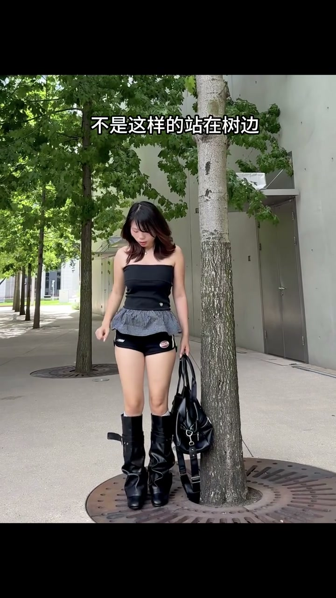
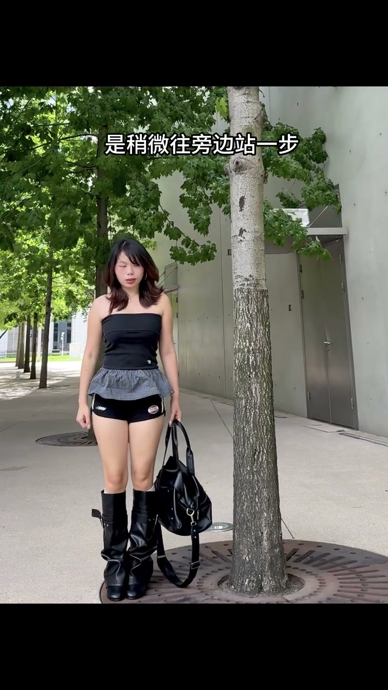
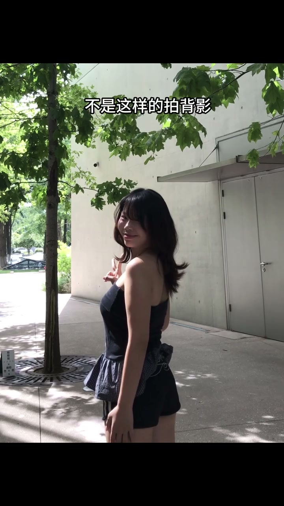
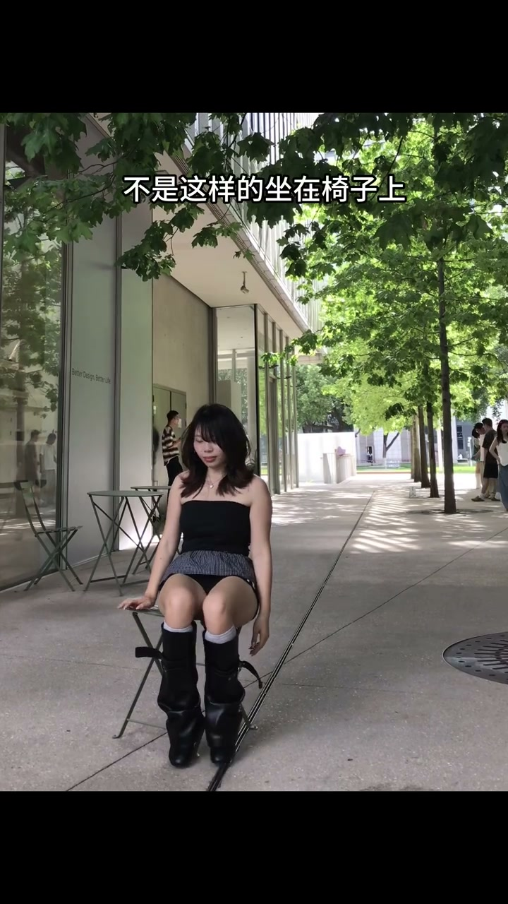
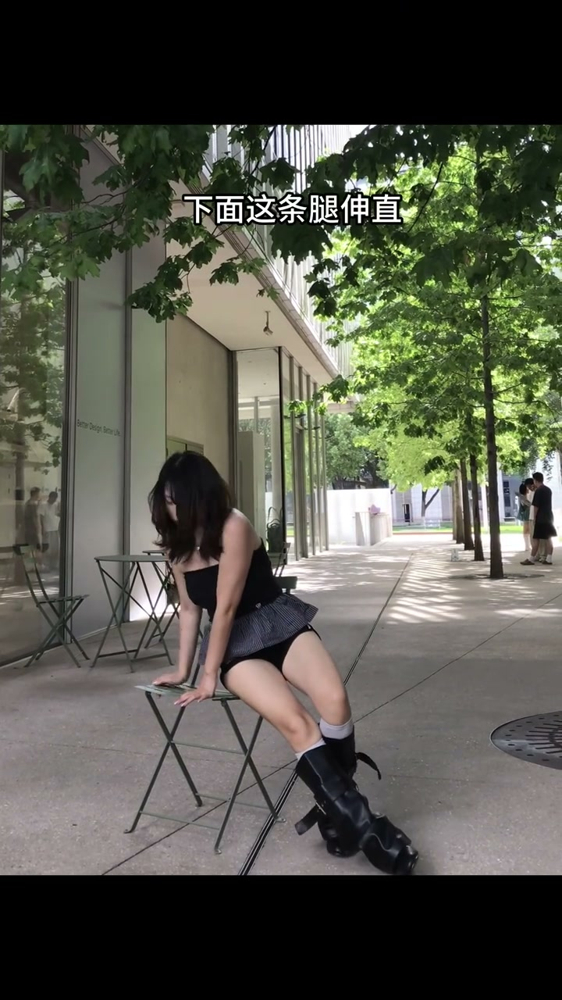
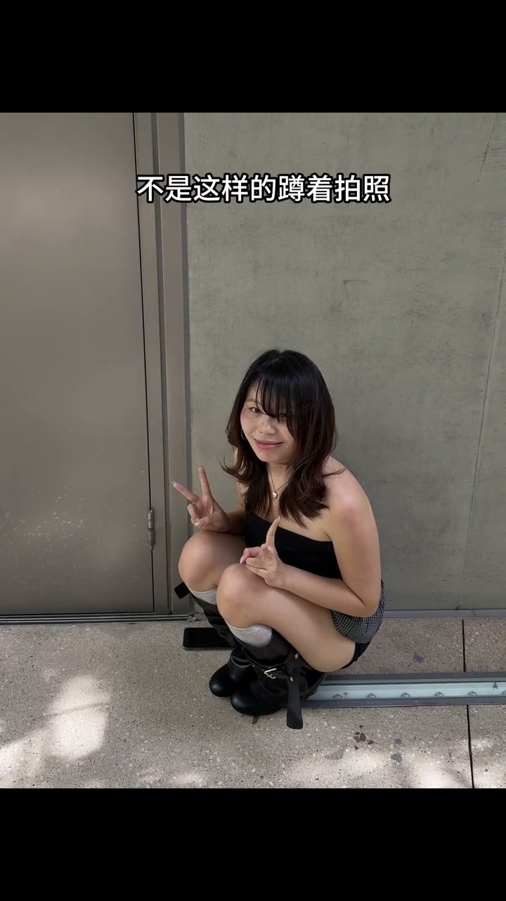
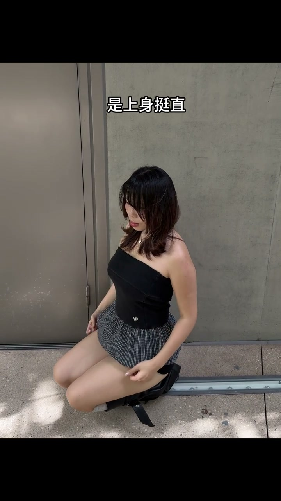

站树边：靠上去，别站直
00:00不是这样的站在树边——直挺挺正面站着，呆板。
00:01正确做法：稍微往旁边站一步，肩膀靠在树上，右腿弯曲——身体有倚靠、有折线，画面立刻有层次。

[00:01] 错：正面直站树边
Wrong: standing straight against the tree, facing forward

[00:03] 对：往旁一步、肩膀靠树、右腿弯曲
Right: one step aside, shoulder against the tree, right leg bent
拍背影：撩发+插腰+回头
00:06不是这样的拍背影——直愣愣站着拍，背影没内容。
00:07正确做法：把头发撩到前面来，一只手插腰，然后回头抓拍——一个回头，背影有了动感和故事感。

[00:07] 错：直愣愣的干背影
Wrong: a stiff, lifeless back view
[00:10] 对：撩发到前、插腰、回头抓拍
Right: hair swept forward, hand on hip, candid glance back
坐椅子：侧坐卡对角线
00:13不是这样的坐在椅子上——正对镜头坐着，横平竖直。
00:14正确做法：侧过来，一只手撑住身体，下面这条腿伸直，上面的腿微曲，整个人放在画面的对角线上——对角线构图，又显腿长又松弛。

[00:14] 错：正对镜头坐在椅子上
Wrong: facing the lens straight on in a chair

[00:17] 对：侧坐撑身、一腿伸一腿曲、卡对角线
Right: side-sitting with support, one leg out one bent, along the diagonal
蹲着拍：上身挺直腿并拢
00:22不是这样的蹲着拍照——松松垮垮蹲着，显矮显垮。
00:23正确做法：上身挺直，双腿并拢往下放——蹲姿也要挺拔，腿并拢还显瘦。

[00:23] 错：松松垮垮蹲着
Wrong: slouching in a loose squat

[00:25] 对：上身挺直、双腿并拢往下放
Right: upper body straight, legs together and lowered
拍照不拼姿势多少，拼每个动作有没有做对：站靠物、背影回头、坐卡对角线、蹲要挺直。